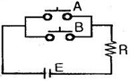
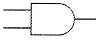
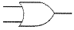
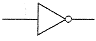
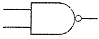
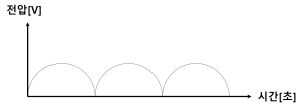

승강기기능사 (2010-10-03 기출문제)
1과목: 승강기개론
1. 교류 엘리베이터의 속도제어방식이 아닌 것은?
- 교류 1단 속도제어방식
- 교류 2단 속도제어방식
- 교류 3단 속도제어방식
- 교류 귀환 전압제어방식
(정답률: 74%)
2. 카가 최상층 및 최하층을 지나쳐 주행하는 것을 방지하는 것은?
- 리미트 스위치
- 균형추
- 인터록 장치
- 정지스위치
(정답률: 85%)

3. 유압회로에 이용되는 펌프의 종류가 아닌 것은?
- 기어펌프
- 밴펌프
- 스크류펌프
- 레벨링펌프
(정답률: 52%)
4. 고속용 승강기에 가장 적합한 조속기(Governor)는?
- 롤 세프티형(GR형)
- 디스크형(GD형)
- 플라이볼형(GF형)
- 플랙시블형(FGC형)
(정답률: 70%)
5. 다음 중 균형추의 총 중량에 관한 설명으로 옳은 것은?
- 일반적으로 빈 카의 자체하중에 정격하중의 35~50%의 중량을 제한 값
- 일반적으로 빈 카의 자체하중에 정격하중을 제한 값
- 일반적으로 빈 카의 자체하중에 정격하중을 더한 값
- 일반적으로 빈 카의 자체하중에 정격하중을 35~50%의 중량을 더한 값
(정답률: 49%)
6. 에스컬레이터의 경사도가 30° 이하이고, 층고가 6[m] 이하이며, 수평주행구간 디딤판의 수가 3개 이상인 경우에 디딤판의 속도는 몇 [m/min] 이하로 할 수 있는가?(오류 신고가 접수된 문제입니다. 반드시 정답과 해설을 확인하시기 바랍니다.)
- 35
- 40
- 50
- 60
(정답률: 32%)
7. 엘리베이터의 카가 갖추어야할 요소로 옳지 못한 것은?
- 카 주위벽은 방화구조로 되어 있어야 한다.
- 외부와의 연락 및 구출장치가 있어야 한다.
- 환풍장치는 부착하지 않는다.
- 비상등이 설치되어 있어야 한다.
(정답률: 87%)
8. 15[kW]전동기의 전부하 회전수가 2420[rpm]인 경우 전부하 토크는?
- 6[kgfㆍm]
- 60[kgfㆍm]
- 150[kgfㆍm]
- 250[kgfㆍm]
(정답률: 35%)
9. 다음 중 승강기의 비상정지장치가 아닌 것은?
- 조속기
- 주전등룔 과전류계전기
- 최상층 종점 스위치
- 운전반 자동ㆍ수동 장치
(정답률: 45%)
10. 도어 머신(door machine)장치가 갖추어야 할 요구 조건이 아닌 것은?
- 소형경량이고 가격이 저렴하여야 한다.
- 대형이고 무거워야 한다.
- 동작이 원활하고 소음이 적어야 한다.
- 고빈도의 작동에 대한 내구성이 강해야 한다.
(정답률: 81%)
11. 카의 조작방법별 구분에서 자동식이란?
- 전임 운전자 조작
- 관리식 조작
- 운전자와 관리실 겸용 조작
- 승객 자신 조작
(정답률: 51%)
12. 엘리베이터에 사용되는 “T”형 가이드레일(Guide Rail)의 단위표시는?
- 레일의 높이로 표시한다.
- 레일 한본의 무게[kg]로 표시한다.
- 레일 1미터[m]당 무게[kg]로 표시한다.
- 레일 5미터[m]당 무게[kg]로 표시한다.
(정답률: 77%)
13. 완충기의 종류를 결정하는데 반드시 필요한 조건은?
- 승강기의 용량
- 승강기의 속도
- 승강기의 용도
- 카의 크기
(정답률: 59%)
14. 순간식 비상정지장치인 즉시작동이 적용되는 승강기는?
- 정격속도가 45[m/min] 이하의 승강기
- 정격속도가 60~1⑤[m/min] 의 승강기
- 정격속도가 120~240[m/min] 의 승강기
- 정격속도가 300[m/min] 이상의 승강기
(정답률: 53%)
15. 에스컬레이터의 안전장치에 해당하지 않는 것은?
- 스텝 체인 안전 스위치(step chain safety switch)
- 스프링(spring) 완충기
- 인레트 스위치(inlet switch)
- 스커트 가드(skirt gurad) 안전장치
(정답률: 74%)
2과목: 안전관리
16. 승강기 기계실에 설비되어서는 안 되는 것은?
- 승강기 제어반
- 환기설비
- 옥탑 물탱크
- 조속기
(정답률: 84%)
17. 카가 주행 중일 때의 도어시스템 기능에 대한 설명으로 맞는 것은?
- 보통 문 닫는 힘을 내기 위하여 도어 모터에 전류를 흘려 토크를 내고 있다.
- 주행 중에는 카 도어가 절대 열려서는 안 된다.
- 공동 주택용에서 저속의 도어를 손으로 억지로 여는데 필요한 힘은 30Kg 이상으로 규정하고 있다.
- 주행 중이라도 카 도어는 고장 시 구출을 위하여 쉽게 열릴 수 있어서는 안 된다.
(정답률: 30%)
18. 수평보행기의 디딤면이 고무제품 등 미끄러지기 어려운 구조가 아닌 경우 수평보행기의 경사도는 몇 도 이하로 하여야 하는가?
- 8° 이하
- 10° 이하
- 12° 이하
- 15° 이하
(정답률: 59%)
19. 상해의 종류에 해당되지 않는 것은?
- 유해물 접촉
- 시력장해
- 청력장해
- 찰과상
(정답률: 66%)
20. 승강기의 방호(안전)장치가 아닌 것은?
- 전동기
- 조속기
- 완충기
- 경보벨
(정답률: 64%)
21. 다음 중 안전사고 발생요인이 가장 높은 것은?
- 불안전한 상태와 행동
- 개인의 개성
- 환경과 유전
- 개인의 감정
(정답률: 85%)
22. 양중기의 와이어 로프로 사용할 수 있는 것은?
- 이음매가 있는 것
- 와이어 로프의 한 가닥에서 소선의 수가 10~20%정도 절단된 것
- 지름의 감소가 공칭 지름의 5%인 것
- 꼬인 것
(정답률: 48%)
23. 작업장으로 통하는 통로의 안전 조건으로 잘못된 것은?
- 통로의 주요한 부분에는 통로 표시를 한다.
- 가설통로의 경사가 20도 초과 시에는 미끄러지지 않는 구조로 한다.
- 옥내에 통로를 설치 시 미끄러지는 등의 위험이 없도록 한다.
- 통로 면으로부터 높이 2[m] 이내에는 장애물이 없도록 한다.
(정답률: 55%)
24. 승강기의 안전장치에 관한 설명으로 틀린 것은?
- 작업 형편상 경우에 따라 일시 제거해도 좋다.
- 카의 출입문이 열려있는 경우 움직이지 않는다.
- 불량할 때는 즉시 보수한 다음 작업한다.
- 반드시 작업 전에 점검한다.
(정답률: 81%)
25. 안전관리자의 직무사항이 아닌 것은?
- 안전작업 교육계획의 수립 및 실시
- 근로환경 보건에 관한 조사
- 재해 원인의 조사와 대책수립
- 작업의 안전에 관한 교육 및 훈련
(정답률: 72%)
26. 안전점검의 주목적으로 옳은 것은?
- 안전작업표준의 적절성을 점검하는데 있다.
- 시설장비의 설계를 점검하는데 있다.
- 법 기준에 대한 적합 여부를 점검하는데 있다.
- 위험을 사전에 발견하여 시정하는데 있다.
(정답률: 68%)
27. 위해ㆍ위험방지를 위하여 방호조치가 필요한 기계기구에 대한 방호조치의 짝으로 알맞은 것은?
- 리프트 - 조속기
- 에스컬레이터 - 파킹장치
- 크레인 - 역화방지기
- 승강기 - 과부하방지장치
(정답률: 65%)
28. 작업내용에 따라 지급해야 할 보호구로 옳지 않은 것은?
- 보안면 : 물체가 날아 흩어질 위험이 있는 작업
- 안전장갑 : 감전의 위험이 있는 작업
- 방열복 : 고열에 의한 화상 등의 위험이 있는 작업
- 안전화 : 물체의 낙하, 물체의 끼임 등이 있는 작업
(정답률: 51%)
29. 권상기의 브레이크 검사와 관계가 없는 것은?
- 로프의 이완을 확인한다.
- 이상음이 발생하는지를 확인한다.
- 플런저는 정상으로 동작하는지를 확인한다.
- 주행 중 브레이크 라이닝이 드럼과 마찰이 있는지를 확인한다.
(정답률: 37%)
30. 다음 중 카 실내에서 검사하는 사항이 아닌 것은?
- 전동기 주회로의 절연저항
- 승강장 출입구 바닥 앞부분과 카 바닥 앞부분과의 틈의 너비
- 도어 스위치의 작동상태
- 외부와 연결하는 통화장치의 작동상태
(정답률: 72%)
3과목: 승강기보수
31. 사용 중인 와이어로프의 육안 점검사항과 거리가 먼 것은?
- 로프의 마모상태
- 변형부식 유무
- 로프 끝의 풀림여부
- 로프의 꼬임방향
(정답률: 58%)
32. 승강장 출입구 바닥 앞부분과 카 바닥 앞부분과의 틈의 너비는 몇[㎝]이하로 하여야 하는가?
- 2
- 3
- 4
- 5
(정답률: 41%)
33. 에스컬레이터 스텝의 구성요소가 아닌 것은?
- 콤
- 크리트
- 라이저
- 디딤판
(정답률: 43%)
34. 다음은 승강기의 표시방법이다. 옳지 않은 것은?
- 승객용이다.
- 15인승이다.
- 중앙개폐식 도어방식으로 120[㎝]이다.
- 정지층수는 15이다.
(정답률: 53%)
35. 수평보행기의 안전장치에 해당되지 않는 것은?
- 스텝체인 안전스위치
- 스커트 가드 안전스위치
- 비상정지스위치
- 핸드레일 인입구 안전스위치
(정답률: 46%)
36. 유압 엘리베이터의 전동기 구동기간은?
- 상승 시에만 구동된다.
- 하강 시에만 구동된다.
- 상승 시와 하강 시 모두 구동된다.
- 부하의 조건에 따라 상승 시 또는 하강 시에 구동된다.
(정답률: 53%)
37. 전자접촉기 등의 조작회로를 접지하였을 경우, 당해 전자접촉기 등이 폐로될 염려가 있는 것의 접속방법으로 옳은 것은?
- 코일의 일단을 접지하지 않는 쪽의 전선에 접속할 것
- 코일의 일단을 접지측 전선에 접속할 것
- 코일과 접지측 전선 사이에 반드시 개폐기가 있을 것
- 코일과 접지측 전선 사이에 반드시 퓨즈를 설치할 것
(정답률: 49%)
38. 교류귀환 전압제어에 대한 설명으로 알맞은 것은?
- 사이리스터 점호각을 바꾸어 유도전동기의 속도를 제어
- 모터의 전기회로에 저항을 넣어 속도를 제어
- 이단속도모터를 사용하여 기동을 고속권선으로, 착상을 저속권선으로 제어
- 교류를 직류로 바꾸어 직류모터의 회전수를 제어
(정답률: 56%)
39. 조속기(Governor) 로프의 안전율은 얼마이어야 하는가?(관련 규정 개정전 문제로 여기서는 기존 정답인 3번을 누르면 정답 처리됩니다. 자세한 내용은 해설을 참고하세요.)
- 6 이상
- 7 이상
- 8 이상
- 9 이상
(정답률: 67%)
40. 유압 엘리베이터에 관한 설명 중 옳지 않은 것은?
- 기계실의 배치가 자유롭다.
- 건물 꼭대기 부분에 하중이 걸리지 않는다.
- 실린더를 사용하므로 행정거리와 속도에 한계가 있다.
- 승강로 상부틈새가 커야만 한다.
(정답률: 57%)
41. 가이드 레일에 대한 설명으로 맞지 않은 것은?
- 카의 기울어짐을 방지
- 15~20년 경과 시 교체
- 카와 균형추의 승강로내 위치규제
- 비상정지장치 작동 시 수직하중을 유지
(정답률: 65%)
42. 승강기 과부하 감지장치의 용도가 아닌 것은?
- 탑승인원 또는 적재하중 감지용
- 정격하중의 1⑤~110%의 범위로 설정
- 과부하 경보 및 도어 닫힘 저지용
- 이상적인 속도 제어용
(정답률: 68%)
43. 에스컬레이터의 스커트 가드와 디딤판과의 틈새는 승강로의 총길이에 걸쳐서 한쪽이 몇 [㎜]이하 이어야 하는가?
- 2
- 3
- 4
- 7
(정답률: 49%)
44. 카 또는 균형추가 승강로 바닥에 충돌하였을 때 카 내의 사람이 안전하도록 충격을 완화 시키는 장치는?
- 조속기
- 순간비상정지장치
- 완충기
- 리미트 스위치
(정답률: 80%)
45. 정격속도가 60[m/min]인 엘리베이터에 사용되는 비상정지장치의 종류는?
- 점차작동형
- 즉시작동형
- 디스크작동형
- 플라이블작동형
(정답률: 44%)
4과목: 기계,전기기초이론
46. 비상용 엘리베이터는 비상운전 시 비상운전등이 점등 되어야 한다. 다음 중 비상운전에 해당되지 않는 것은?
- 비상호출스위치 조작에 의한 운전
- 1차 소방스위치 및 소방스위치 조작에 의한 운전
- 비상호출버튼 조작에 의한 운전
- 수동버튼 조작에 의한 운전
(정답률: 59%)
47. 포아송 비에 해당하는 식은?
- 가로변형률 / 세로변형률
- 세로변형률 / 가로변형률
- 가로변형률 / 부피변형률
- 세로변형률 / 부피변형률
(정답률: 53%)
48. 그림의 회로와 같은 내용의 논리기호는?





(정답률: 66%)
49. 승강기의 안전회로는 어떻게 구성하는 것이 좋은가?
- 병렬회로
- 직렬회로
- 직병렬회로
- 인터록회로
(정답률: 47%)
50. 전기기기의 충전부와 외함 사이의 저항은?
- 절연저항
- 접지저항
- 고유저항
- 브리지저항
(정답률: 56%)
51. 다음 중 탄성률이 가장 큰 것은?
- 스프링
- 섬유질
- 금강석
- 진흙
(정답률: 46%)
52. 1kWh를 줄[joule]로 환산하면?
- 3.6×103[J]
- 3.6×104[J]
- 3.6×105[J]
- 3.6×106[J]
(정답률: 64%)
53. 다음 중 전하량의 단위는?
- [C]
- [A]
- [V]
- [Ω]
(정답률: 69%)
54. 교류에서 저압이란?(오류 신고가 접수된 문제입니다. 반드시 정답과 해설을 확인하시기 바랍니다.)
- 200[V] 이하
- 380[V] 이하
- 440[V] 이하
- 600[V] 이하
(정답률: 39%)
55. 두 전하 사이에서 작용하는 힘(쿨롱의 법칙)을 설명한 것은?
- 두 전하의 곱에 반비례하고 거리에 비례한다.
- 두 전하의 곱에 반비례하고 거리의 제곱에 비례한다.
- 두 전하의 곱에 비례하고 거리에 반비례한다.
- 두 전하의 곱에 비례하고 거리의 제곱에 반비례한다.
(정답률: 49%)
56. 시퀀스 회로에서 일종의 기억회로라고 할 수 있는 것은?
- AND회로
- OR회로
- 자기유지회로
- NOT회로
(정답률: 78%)
57. 4극인 유도 전동기의 동기속도가 1800[rpm]일 때 전원 주파수는?
- 50[㎐]
- 60[㎐]
- 70[㎐]
- 80[㎐]
(정답률: 67%)
58. 피측정물의 치수와 표준치수와의 차를 측정하는 것은?
- 버니어켈리퍼스
- 마이크로미터
- 하이트 게이지
- 다이얼 게이지
(정답률: 43%)
59. 그림은 단상 교류전압을 전파정류한 파형이다. 이에 대한 설명 중 틀린 것은?

- 다이오드 4개로 이와 같은 출력을 얻을 수 있다.
- 평활회로를 사용하지 않더라도 이 전압 그대로 계전기를 동작시킬 수 있다.
- 이 전압파형은 DC전압이므로 회로구성 시 ＋, -극성을 고려하여야 한다.
- 콘덴서를 사용하여 다시 교류전원으로 환원시킬 수 있다.
(정답률: 41%)
60. 되먹임 제어에서 꼭 필요한 장치는?
- 입력과 출력을 비교하는 장치
- 응답속도를 느리게 하는 장치
- 응답속도를 빠르게 하는 장치
- 안정도를 좋게 하는 장치
(정답률: 73%)